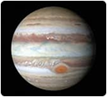
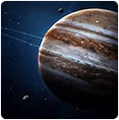
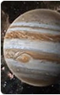
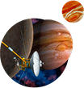
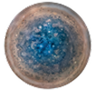

Diameter139,820 km
Moons95
Day9 h 56 min
Year11.86 Earth years
Distance5.2 AU
Mass318 Earths
Jupiter has the shortest day of all the planets. It turns on its axis once every 9 hours and 55 minutes.
Jupiter is the third-brightest natural object in the Earth's night sky after the Moon and Venus.


Jupiter has a very strong magnetic field. This is around 14 times stronger than the magnetic field found on Earth — the largest of any planet in the solar system.
Diameter
139,820
km
Moons
95
Day
9 h 56
min
Distance from Sun
5.2
AU
Year
11.86
Earth years
Mass
318
Earths
-
1610
Galileo spots Jupiter's four largest moons.
-
1979
Voyager 1 and 2 fly by Jupiter.
-
1995
Galileo probe enters Jupiter's atmosphere.
-
2016
Juno arrives at Jupiter.
Hero image: Jupiter